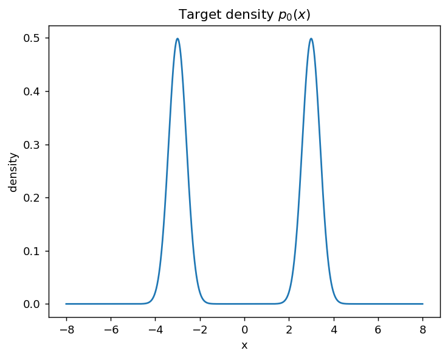
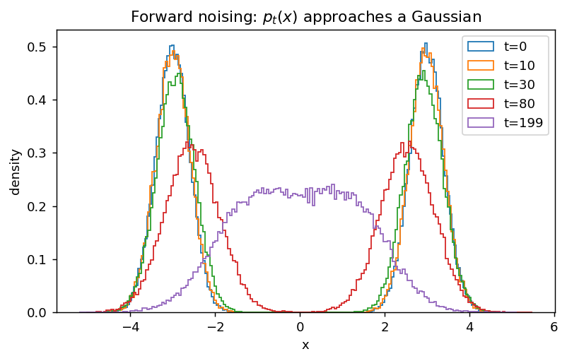
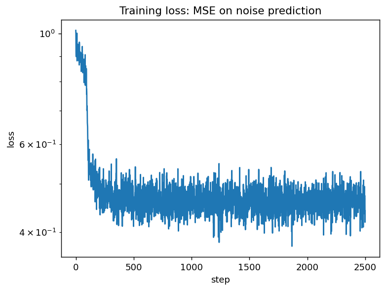
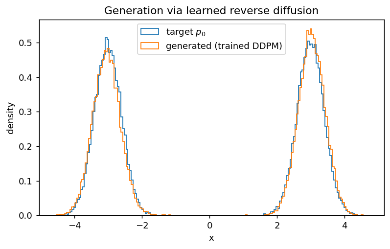

Diffusion models in AI as statistical physics: 1D DDPM + a simple learning protocol#
Forward process = stochastic dynamics (diffusion / OU-like relaxation toward a Gaussian)
Central object = score \(s_t(x)=\partial_x\log p_t(x)\) (force-like)
Reverse process = time-reversed dynamics that uses the score
Learning protocol (DDPM): train a tiny network \(\varepsilon_\theta(x_t,t)\) to predict injected noise, then sample.
We use a 1D “dataset” (a mixture of Gaussians) so everything is transparent and fast.
import numpy as np
import matplotlib.pyplot as plt
plt.rcParams["figure.dpi"] = 130
rng = np.random.default_rng(0)
1) Physics warm-up: diffusion, Fokker–Planck, and the score#
Overdamped Langevin dynamics in 1D:
Probability density evolves by Fokker–Planck:
Special case \(U=0\): heat equation \(\partial_t p = D\partial_x^2 p\).
Score (force-like object):
If \(p\propto e^{-\beta U}\), then \(s=-\beta U'\): score is literally a force.
Diffusion models in AI use a forward diffusion to destroy structure, and a reverse-time dynamics (using an estimated score) to generate samples.
2) A toy “dataset”: 1D mixture of Gaussians#
Target:
We will:
Define a DDPM forward noising process \(x_0\to x_t\),
Show how \(p_t\) approaches a Gaussian,
Train a small model to predict the noise,
Run the reverse sampler to generate data.
m = 3.0
sigma0 = 0.4
def sample_p0(n, rng=rng):
signs = rng.choice([-1.0, +1.0], size=n)
return signs*m + sigma0*rng.standard_normal(n)
def normal_pdf(x, mu, sig):
return np.exp(-0.5*((x-mu)/sig)**2) / (np.sqrt(2*np.pi)*sig)
xs = np.linspace(-8, 8, 1200)
p0 = 0.5*normal_pdf(xs, -m, sigma0) + 0.5*normal_pdf(xs, +m, sigma0)
plt.figure()
plt.plot(xs, p0)
plt.title("Target density $p_0(x)$")
plt.xlabel("x"); plt.ylabel("density")
plt.show()

3) Forward process (DDPM): Gaussian corruption as a discrete diffusion#
Forward transitions:
Closed form:
Interpretation: this is diffusion/noising written in a convenient reparameterized form.
T = 200
beta = np.linspace(1e-4, 0.02, T).astype(np.float64)
alpha = 1.0 - beta
alpha_bar = np.cumprod(alpha)
def q_sample(x0, t, eps):
ab = alpha_bar[t]
return np.sqrt(ab)*x0 + np.sqrt(1.0-ab)*eps
# visualize forward noising
n = 60000
x0 = sample_p0(n)
ts_show = [0, 10, 30, 80, 199]
plt.figure(figsize=(7,4))
for t in ts_show:
eps = rng.standard_normal(n)
xt = q_sample(x0, t, eps)
plt.hist(xt, bins=180, density=True, histtype="step", label=f"t={t}")
plt.title("Forward noising: $p_t(x)$ approaches a Gaussian")
plt.xlabel("x"); plt.ylabel("density")
plt.legend()
plt.show()

4) Learning protocol (DDPM): predict the injected noise#
Classic DDPM objective:
From \(\varepsilon_\theta\) we get an estimate of \(x_0\):
Below is a minimal PyTorch implementation (CPU is fine).
# PyTorch (install if needed): pip install torch
try:
import torch
import torch.nn as nn
import torch.nn.functional as F
except Exception as e:
raise RuntimeError(
"PyTorch is required for the learning part. "
"Install with `pip install torch` (CPU build is fine). "
f"Import error: {e}"
)
device = torch.device("cuda" if torch.cuda.is_available() else "cpu")
device
device(type='cpu')
def sinusoidal_time_embedding(t, dim=32, max_period=10000.0):
half = dim // 2
freqs = torch.exp(-np.log(max_period) * torch.arange(0, half, device=t.device) / half)
args = t.float().unsqueeze(1) * freqs.unsqueeze(0)
emb = torch.cat([torch.cos(args), torch.sin(args)], dim=1)
if dim % 2 == 1:
emb = torch.cat([emb, torch.zeros_like(emb[:, :1])], dim=1)
return emb
class EpsMLP(nn.Module):
def __init__(self, tdim=32, h=128):
super().__init__()
self.tdim = tdim
self.net = nn.Sequential(
nn.Linear(1 + tdim, h),
nn.SiLU(),
nn.Linear(h, h),
nn.SiLU(),
nn.Linear(h, 1),
)
def forward(self, x, t):
te = sinusoidal_time_embedding(t, dim=self.tdim)
return self.net(torch.cat([x, te], dim=1))
model = EpsMLP(tdim=32, h=128).to(device)
sum(p.numel() for p in model.parameters())
20993
alpha_bar_torch = torch.from_numpy(alpha_bar).to(device).float()
def sample_batch(batch_size, rng=rng):
x0 = sample_p0(batch_size, rng=rng).astype(np.float32)
x0 = torch.from_numpy(x0).to(device).view(-1,1)
t = torch.randint(0, T, (batch_size,), device=device, dtype=torch.long)
eps = torch.randn(batch_size, 1, device=device)
ab = alpha_bar_torch[t].view(-1,1)
xt = torch.sqrt(ab)*x0 + torch.sqrt(1.0-ab)*eps
return xt, t, eps
# Train
batch_size = 2048
steps = 2500 # increase for nicer samples; 2–5k is plenty in 1D
lr = 2e-3
opt = torch.optim.AdamW(model.parameters(), lr=lr)
loss_hist = []
for k in range(steps):
xt, t, eps = sample_batch(batch_size)
pred = model(xt, t)
loss = F.mse_loss(pred, eps)
opt.zero_grad(set_to_none=True)
loss.backward()
opt.step()
loss_hist.append(loss.item())
if (k+1) % 250 == 0:
print(f"step {k+1:4d}/{steps} loss={loss.item():.4f}")
plt.figure()
plt.plot(loss_hist)
plt.yscale("log")
plt.title("Training loss: MSE on noise prediction")
plt.xlabel("step"); plt.ylabel("loss")
plt.show()
step 250/2500 loss=0.4615
step 500/2500 loss=0.4107
step 750/2500 loss=0.4196
step 1000/2500 loss=0.4426
step 1250/2500 loss=0.4683
step 1500/2500 loss=0.4451
step 1750/2500 loss=0.4206
step 2000/2500 loss=0.4599
step 2250/2500 loss=0.4639
step 2500/2500 loss=0.4412

5) Sampling: reverse-time generation (DDPM ancestral sampler)#
We start from \(x_T\sim \mathcal N(0,1)\) and step backward using the DDPM posterior. We plug in \(\hat x_0(x_t,t)\) computed from \(\varepsilon_\theta(x_t,t)\).
@torch.no_grad()
def predict_x0(xt, t):
ab = alpha_bar_torch[t].view(-1,1)
eps_hat = model(xt, t)
x0_hat = (xt - torch.sqrt(1.0-ab)*eps_hat) / torch.sqrt(ab)
return x0_hat
@torch.no_grad()
def ddpm_sample(n=50000):
x = torch.randn(n, 1, device=device) # x_T ~ N(0,1)
alpha_t = torch.from_numpy(alpha).to(device).float()
beta_t = torch.from_numpy(beta).to(device).float()
ab_t = alpha_bar_torch
for t in reversed(range(T)):
tt = torch.full((n,), t, device=device, dtype=torch.long)
x0_hat = predict_x0(x, tt)
if t == 0:
x = x0_hat
break
ab = ab_t[t]
ab_prev = ab_t[t-1]
a = alpha_t[t]
b = beta_t[t]
coef1 = torch.sqrt(ab_prev) * b / (1.0 - ab)
coef2 = torch.sqrt(a) * (1.0 - ab_prev) / (1.0 - ab)
mu = coef1 * x0_hat + coef2 * x
beta_tilde = (1.0 - ab_prev) / (1.0 - ab) * b
x = mu + torch.sqrt(beta_tilde) * torch.randn_like(x)
return x.squeeze(1).cpu().numpy()
x_gen = ddpm_sample(n=50000)
plt.figure(figsize=(7,4))
plt.hist(sample_p0(50000), bins=180, density=True, histtype="step", label="target $p_0$")
plt.hist(x_gen, bins=180, density=True, histtype="step", label="generated (trained DDPM)")
plt.title("Generation via learned reverse diffusion")
plt.xlabel("x"); plt.ylabel("density")
plt.legend()
plt.show()

6) Stat-phys interpretation: score as a force#
For Gaussian corruption, DDPM training implies an approximate score:
So \(\varepsilon_\theta\) is essentially learning a force field (in log-density space) that drives the time-reversed dynamics.
Exercises#
Change the target distribution (3 modes; asymmetric weights; heavier tails) and retrain.
Compare schedules (linear vs cosine) and see training stability.
Replace the DDPM ancestral sampler by a reverse-SDE Euler step (score-based view).